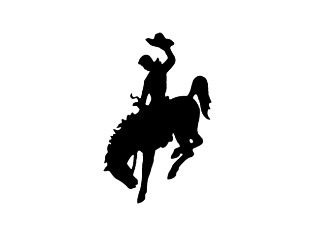
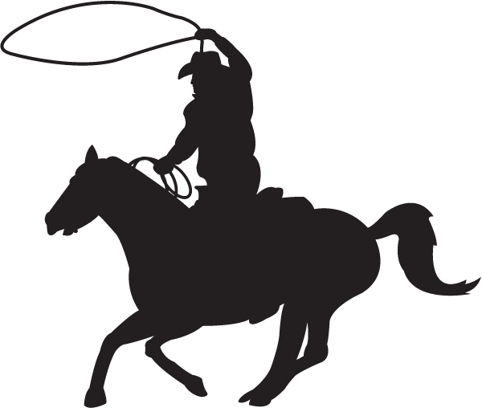
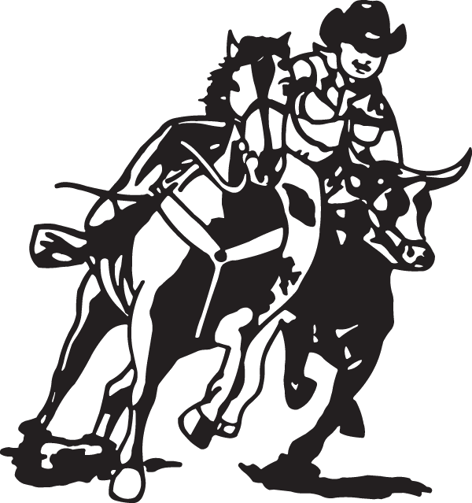
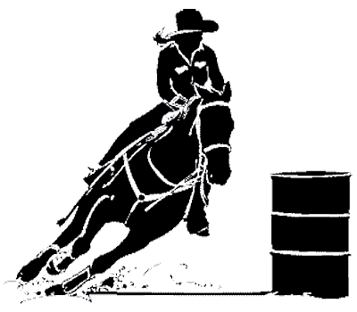
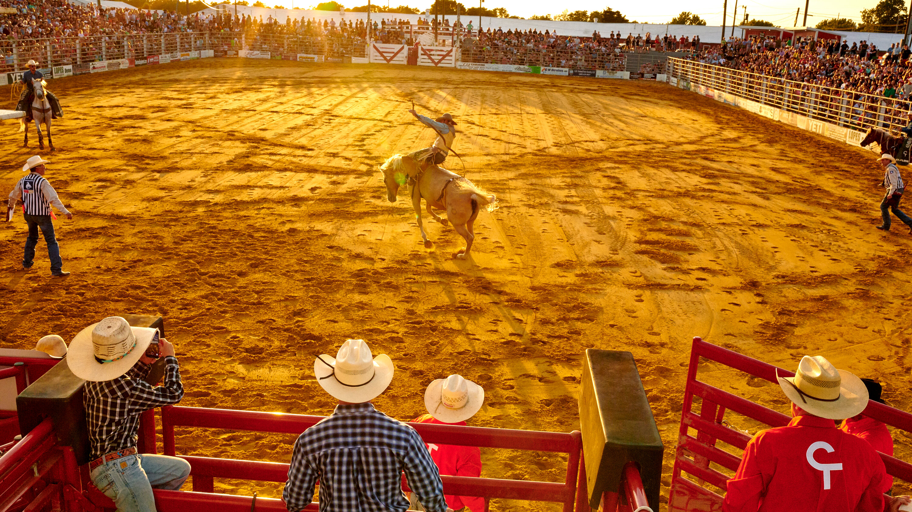
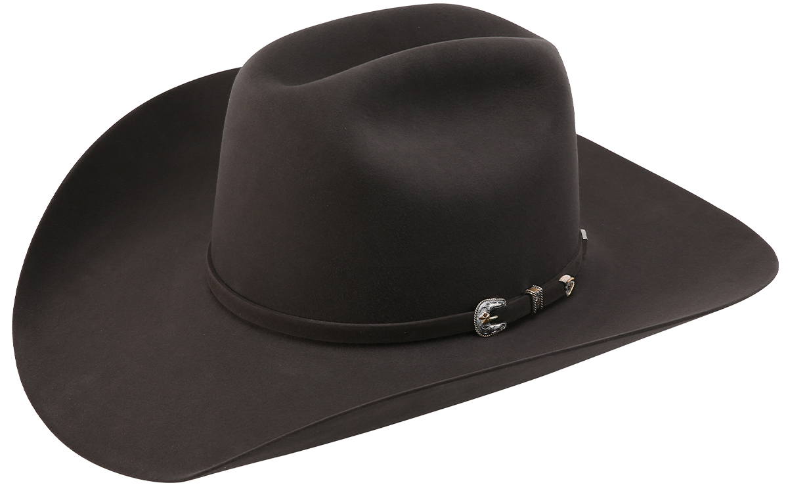
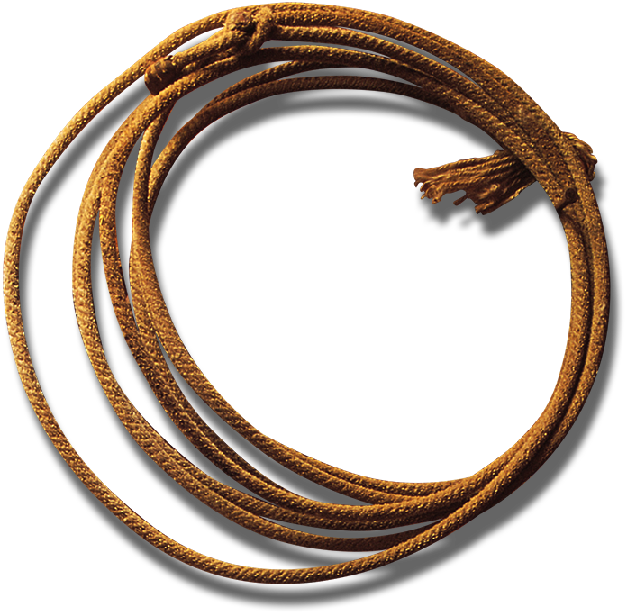
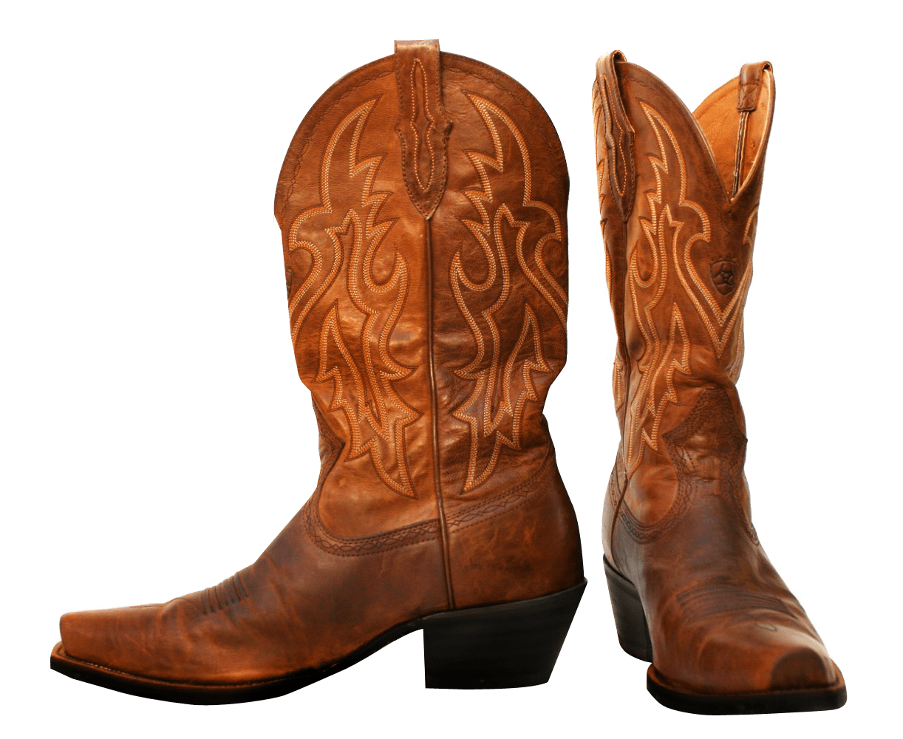
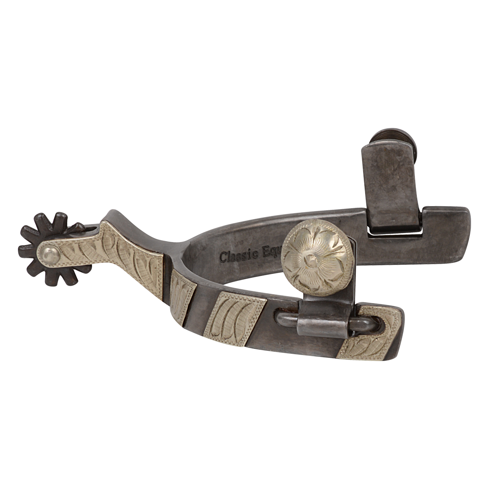
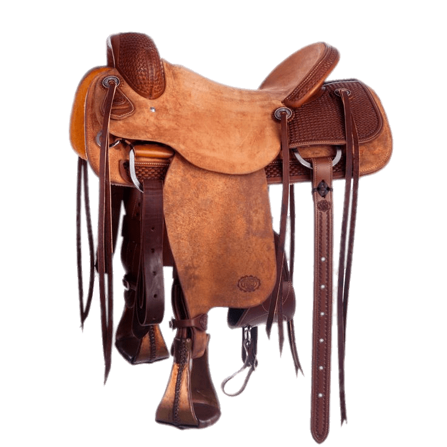

Rodeos
Welcome to the West!
Rodeo is a competivive equestrian sport that focus on practice of hearding cattle. It as originaly originated from Spain and Mexico, but later expanded to the western United States, western Canada and northern Mexico. American Rodeo consists of:
Bareback/Saddle Bronc
Team roping
Bull riding
Steer Wrestling
Tie down roping
Barell Racing

History
Many rodeo events were based on the tasks required by cattle ranching. The working cowboy developed skills to fit the needs of the terrain and climate of the American west, and there were many regional variations. Some of the skills required to manage cattle and horses date back to the 16th-century rodeo traditions
Yeehaw! Tools!
- 
- 
- 
- 
- 